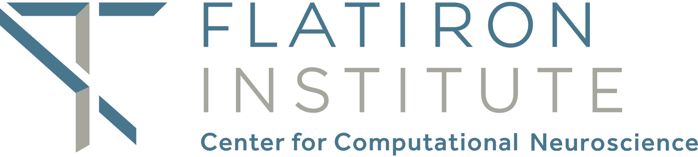

plenoptic


plenoptic is a python library for model-based stimulus synthesis. It
provides tools to help researchers understand their model by synthesizing novel
informative stimuli, which help build intuition for what features the model
ignores and what it is sensitive to. These synthetic images can then be used in
future perceptual or neural experiments for further investigation.
Getting started
If you are unfamiliar with stimulus synthesis, see the Conceptual Introduction for an in-depth introduction.
If you understand the basics of synthesis and want to get started using
plenopticquickly, see the Quickstart tutorial.
Installation
The best way to install plenoptic is via pip.
$ pip install plenoptic
See the Installation page for more details, including how to set up an isolated virtual environment (recommended).
ffmpeg and videos
Several methods in this package generate videos. There are several backends possible for saving the animations to file, see matplotlib documentation for more details. In order convert them to HTML5 for viewing (and thus, to view in a jupyter notebook), you’ll need ffmpeg installed and on your path as well. Depending on your system, this might already be installed.
To change the backend, run matplotlib.rcParams['animation.writer'] = writer
before calling any of the animate functions. If you try to set that rcParam
with a random string, matplotlib will tell you the available choices.
Contents
Synthesis methods
Metamers: given a model and a reference image, stochastically generate a new image whose model representation is identical to that of the reference image. This method investigates what image features the model disregards entirely.
Example papers: [Portilla2000], [Freeman2011], [Deza2019], [Feather2019], [Wallis2019]
Eigendistortions: given a model and a reference image, compute the image perturbation that produces the smallest and largest changes in the model response space. This method investigates the image features the model considers the least and most important.
Example papers: [Berardino2017]
Maximal differentiation (MAD) competition: given two metrics that measure distance between images and a reference image, generate pairs of images that optimally differentiate the models. Specifically, synthesize a pair of images that the first model says are equi-distant from the reference while the second model says they are maximally/minimally distant from the reference. Then synthesize a second pair with the roles of the two models reversed. This method allows for efficient comparison of two metrics, highlighting the aspects in which their sensitivities differ.
Example papers: [Wang2008]
Geodesics: given a model and two images, synthesize a sequence of images that lie on the shortest (“geodesic”) path in the model’s representation space. This method investigates how a model represents motion and what changes to an image it consider reasonable.
Example papers: [Henaff2016], [Henaff2020]
Models, Metrics, and Model Components
Portilla-Simoncelli texture model, [Portilla2000], which measures the statistical properties of visual textures, here defined as “repeating visual patterns.”
Steerable pyramid, [Simoncelli1995], a multi-scale oriented image decomposition. The basis are oriented (steerable) filters, localized in space and frequency. Among other uses, the steerable pyramid serves as a good representation from which to build a primary visual cortex model. See the pyrtools documentation for more details on image pyramids in general and the steerable pyramid in particular.
Structural Similarity Index (SSIM), [Wang2004], is a perceptual similarity metric, returning a number between -1 (totally different) and 1 (identical) reflecting how similar two images are. This is based on the images’ luminance, contrast, and structure, which are computed convolutionally across the images.
Multiscale Structrual Similarity Index (MS-SSIM), [Wang2003], is a perceptual similarity metric similar to SSIM, except it operates at multiple scales (i.e., spatial frequencies).
Normalized Laplacian distance, [Laparra2016] and [Laparra2017], is a perceptual distance metric based on transformations associated with the early visual system: local luminance subtraction and local contrast gain control, at six scales.
Getting help
We communicate via several channels on Github:
Discussions is the place to ask usage questions, discuss issues too broad for a single issue, or show off what you’ve made with plenoptic.
If you’ve come across a bug, open an issue.
If you have an idea for an extension or enhancement, please post in the ideas section of discussions first. We’ll discuss it there and, if we decide to pursue it, open an issue to track progress.
See the contributing guide for how to get involved.
In all cases, please follow our code of conduct.
Basic concepts
Synthesis method introductions
Models and metrics
Synthesis method examples
Advanced usage
Portilla, J., & Simoncelli, E. P. (2000). A parametric texture model based on joint statistics of complex wavelet coefficients. International journal of computer vision, 40(1), 49–70. https://www.cns.nyu.edu/~lcv/texture/. https://www.cns.nyu.edu/pub/eero/portilla99-reprint.pdf
Freeman, J., & Simoncelli, E. P. (2011). Metamers of the ventral stream. Nature Neuroscience, 14(9), 1195–1201. http://www.cns.nyu.edu/pub/eero/freeman10-reprint.pdf
Deza, A., Jonnalagadda, A., & Eckstein, M. P. (2019). Towards metamerism via foveated style transfer. In , International Conference on Learning Representations.
Feather, J., Durango, A., Gonzalez, R., & McDermott, J. (2019). Metamers of neural networks reveal divergence from human perceptual systems. In NeurIPS (pp. 10078–10089).
Wallis, T. S., Funke, C. M., Ecker, A. S., Gatys, L. A., Wichmann, F. A., & Bethge, M. (2019). Image content is more important than bouma’s law for scene metamers. eLife. http://dx.doi.org/10.7554/elife.42512
Berardino, A., Laparra, V., J Ball'e, & Simoncelli, E. P. (2017). Eigen-distortions of hierarchical representations. In I. Guyon, U. Luxburg, S. Bengio, H. Wallach, R. Fergus, S. Vishwanathan, & R. Garnett, Adv. Neural Information Processing Systems (NIPS*17) (pp. 1–10). : Curran Associates, Inc. https://www.cns.nyu.edu/~lcv/eigendistortions/ http://www.cns.nyu.edu/pub/lcv/berardino17c-final.pdf
Wang, Z., & Simoncelli, E. P. (2008). Maximum differentiation (MAD) competition: A methodology for comparing computational models of perceptual discriminability. Journal of Vision, 8(12), 1–13. https://ece.uwaterloo.ca/~z70wang/research/mad/ http://www.cns.nyu.edu/pub/lcv/wang08-preprint.pdf
H'enaff, O.~J., & Simoncelli, E.~P. (2016). Geodesics of learned representations. ICLR. http://www.cns.nyu.edu/pub/lcv/henaff16b-reprint.pdf
O Hénaff, Y Bai, J Charlton, I Nauhaus, E P Simoncelli and R L T Goris. Primary visual cortex straightens natural video trajectories Nature Communications, vol.12(5982), Oct 2021. https://www.cns.nyu.edu/pub/lcv/henaff20-reprint.pdf
Simoncelli, E. P., & Freeman, W. T. (1995). The steerable pyramid: A flexible architecture for multi-scale derivative computation. In , Proc 2nd IEEE Int’l Conf on Image Proc (ICIP) (pp. 444–447). Washington, DC: IEEE Sig Proc Society. http://www.cns.nyu.edu/pub/eero/simoncelli95b.pdf
Wang, Z., Bovik, A., Sheikh, H., & Simoncelli, E. (2004). Image quality assessment: from error visibility to structural similarity. IEEE Transactions on Image Processing, 13(4), 600–612. https://www.cns.nyu.edu/~lcv/ssim/. http://www.cns.nyu.edu/pub/lcv/wang03-reprint.pdf
Z Wang, E P Simoncelli and A C Bovik. Multiscale structural similarity for image quality assessment Proc 37th Asilomar Conf on Signals, Systems and Computers, vol.2 pp. 1398–1402, Nov 2003. http://www.cns.nyu.edu/pub/eero/wang03b.pdf
Laparra, V., Berardino, A., Johannes Ball'e, & Simoncelli, E. P. (2017). Perceptually Optimized Image Rendering. Journal of the Optical Society of America A, 34(9), 1511. http://www.cns.nyu.edu/pub/lcv/laparra17a.pdf
Laparra, V., Ballé, J., Berardino, A. and Simoncelli, E.P., 2016. Perceptual image quality assessment using a normalized Laplacian pyramid. Electronic Imaging, 2016(16), pp.1-6. http://www.cns.nyu.edu/pub/lcv/laparra16a-reprint.pdf
This package is supported by the Simons Foundation Flatiron Institute’s Center for Computational Neuroscience.
